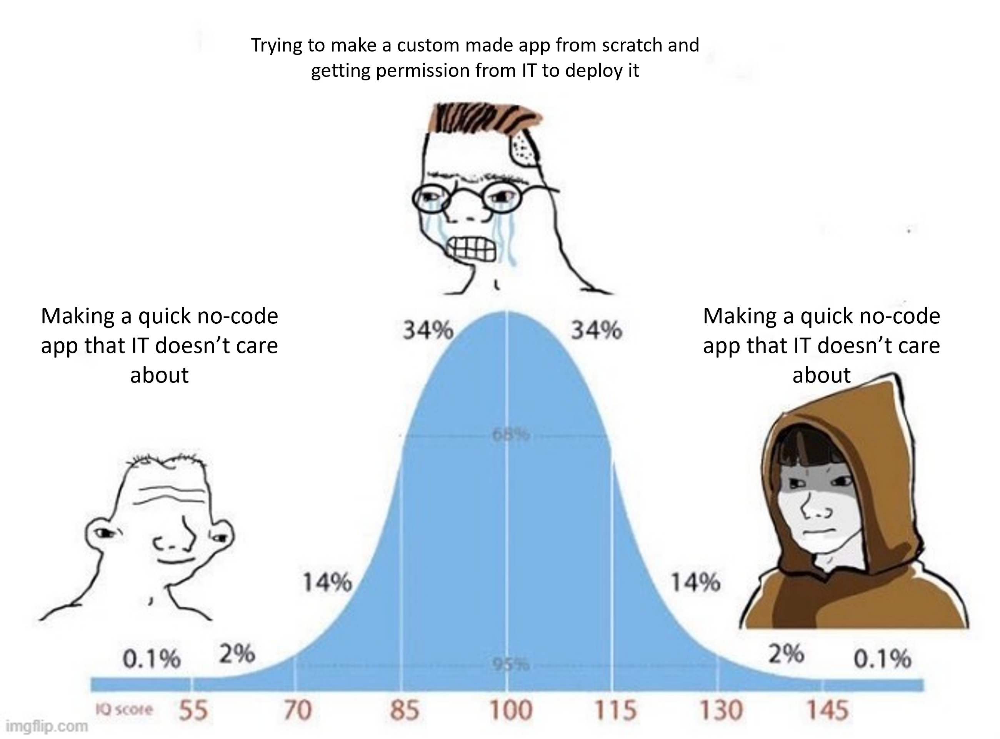

library(appsheet)Strengthen your no-code apps with R code: appsheet 0.1.0
rweekly
package
no-code
appsheet
This blog post serves two purposes:
- To explain why no-code apps might be useful to you.
- To announce the release of
{appsheet}0.1.0 to the world. It allows to interact with Google’s Appsheet API to read, add, edit and delete data from AppSheet tables.
So, let’s understand why no-code apps might be important for an R user.
Why no-code apps?
Maybe the first thing that comes to your mind as an R user/developer when talking about app development is, naturally, shiny. It is true that the shiny ecosystem is big, keeps growing, and offers a wide variety of customization for your apps/dashboards, but for small to medium-sized businesses, it might not be the cheapest or easiest option.
In those types of businesses, you’ll often find data stored in spreadsheets that get fed manually (row by row) or by some kind of digital form. This is true not just for these kinds of businesses but for small offices in big organizations too, especially outside the tech world. When attempting to upgrade the data collection flow, many of these organizations opt for no-code alternatives. While I consider this a pretty good solution for data collection and data storage, I believe that the data analysis process might benefit from using our favorite programming language: R.
To be 100% transparent, the creation of this package comes from my experience in a big governmental organization, where the IT department didn’t want to deploy a custom-made shiny app and didn’t even allow my team to deploy it on a shinyapps.io free-tier instance. Hey, that’s life. So, for new projects, I decided to use a no-code alternative that took advantage of the cloud storage provided for the email service: Google’s Appsheet.

Appsheet allows you to build apps pretty fast based on data you already have. You can feed it a Google Sheet (and other data storage formats) and it will generate Views and Forms for your app users to interact with. With some knowledge of relational databases, you can get a pretty decent looking app for desktop and mobile devices that you can customize in just a few hours of work.
Why R with no-code apps
Where it still has plenty of room to grow is in the data analysis space. While it is possible to have tables, histograms, pie charts, donut charts, column plots, scatter plots, and even maps, the only aggregation options are count, average, min and max. If you want to see the value of a specific column, you have to hover on it.
What if instead of a plot you want a table that shows the same information (count based on a column)? You can’t have it. I mean, you can have it if you implement some ultra complicated automation workflow, but at that point, why don’t you just use R?
That’s why I created this package. I wanted a way to interact with Appsheet’s API with my favorite language, taking advantage of the power of Quarto and the tidyverse for data cleaning, visualization and reporting. Now, anyone who wants to do the same thing doesn’t need to start from scratch.
The four basic operations
The first step is to Enable the API for cloud-based service communication. Once this is done you should have:
- The App ID. Use it in the
appIdargument ofappsheet()or via theAPPSHEET_APP_IDenvironmental variable. - The Application Access Key. Use it in the
access_keyargument ofappsheet()or via theAPPSHEET_APP_ACCESS_KEYenvironmental variable.
The appsheet() function looks for both environmental variables by default.
The API only exposes really basic operations: read, add, edit and remove table records. It all starts with loading the package.
Read a table
The first argument of appsheet() is a table name. By default, appsheet() will use the “Find” action, which reads all the rows. The following code is the equivalent of using appsheet(tableName = "Driver", Action = "Find").
appsheet("Driver")#> # A tibble: 7 × 7
#> `_RowNumber` Key `Driver Name` Photo Email `Phone Number` Jobs
#> <chr> <chr> <chr> <chr> <chr> <chr> <chr>
#> 1 2 70608c66 Driver 1 Driver_Images/… driv… 1-206-555-1000 db9e…
#> 2 3 261fadec Driver 2 Driver_Images/… driv… 1-206-555-1001 36a4…
#> 3 4 525982c5 Driver 3 Driver_Images/… driv… 1-206-555-1002 1db9…
#> 4 5 90eb1244 Driver 4 Driver_Images/… driv… 1-206-555-1003 e367…
#> 5 6 ddb26f78 Driver 5 Driver_Images/… driv… 1-206-555-1004 5420…
#> 6 7 29671cfb Driver 6 Driver_Images/… driv… 1-206-555-1005 98ed…
#> 7 8 7a6fafca Driver 7 Driver_Images/… driv… 1-206-555-1006 0b64…When the action is “Find”, you can take advantage of the Selector argument of ash_properties(), which can use some AppSheet internal functions to narrow the output.
appsheet(
tableName = "Driver",
Properties = ash_properties(Selector = 'Filter(Driver, [Key] = "70608c66")')
)#> # A tibble: 1 × 7
#> `_RowNumber` Key `Driver Name` Photo Email `Phone Number` Jobs
#> <chr> <chr> <chr> <chr> <chr> <chr> <chr>
#> 1 2 70608c66 Driver 1 Driver_Images/… driv… 1-206-555-1000 db9e…The “Find” action is probably the one you’ll find yourself spending most time with
Add records to a table
The “Add” action allows to add one or multiple records to a table. You must provide Rows, which can be a dataframe with the same column names as the specified table. You don’t need to provide all the columns to be successful, but can’t exclude the ones required by your app. Also, don’t try to add the _RowNumber(or Row ID when using an AppsSheet database), as it is generated internally.
An “Add” action returns a data.frame with the added rows when successful.
row_key <- paste0(sample(letters, 8), collapse = "") # to be reused
appsheet(
tableName = "Driver",
Action = "Add",
Rows = tibble::tibble(
Key = row_key, # required in app logic
`Email` = "driverXX@company.com" # required in app logic
)
)#> # A tibble: 1 × 7
#> `_RowNumber` Key `Driver Name` Photo Email `Phone Number` Jobs
#> <chr> <chr> <chr> <chr> <chr> <chr> <chr>
#> 1 9 lcyieurm "" "" driverXX@compa… "" ""Update records from a table
The “Edit” action allow to update values from one or multiple records from a table, it also can target multiple columns. This one also requires the Rows argument. Again, you can’t use the _RowNumber column (but in this one you can use the Row ID generated by an Appsheet database).
An “Edit” action returns a data.frame with the whole content of the updated rows when successful.
appsheet(
tableName = "Driver",
Action = "Edit",
Rows = tibble::tibble(
Key = row_key,
`Driver Name` = "Some name",
Photo = "some/path.jpg"
)
)#> # A tibble: 1 × 7
#> `_RowNumber` Key `Driver Name` Photo Email `Phone Number` Jobs
#> <chr> <chr> <chr> <chr> <chr> <chr> <chr>
#> 1 9 lcyieurm Some name some/path.jpg driver… "" ""Delete records from a table
The “Delete” action allows to delete one or multiple records from a table. This one also requires the Rows argument. Again, you can’t use the _RowNumber column (but in this one you can use the Row ID generated by an Appsheet database).
A “Delete” action returns a data.frame with the deleted rows when successful.
appsheet(
tableName = "Driver",
Action = "Delete",
Rows = tibble::tibble(
Key = row_key
)
)#> # A tibble: 1 × 7
#> `_RowNumber` Key `Driver Name` Photo Email `Phone Number` Jobs
#> <chr> <chr> <chr> <chr> <chr> <chr> <chr>
#> 1 9 lcyieurm Some name some/path.jpg driver… "" ""Automate reporting with Github actions
To take the advantage of the API, you can automate the creation of your reports. Github Actions is a pretty popular choice to set a temporary computing environment for different tasks. Here, I show you just the necessary for you to create your report with Quarto and send it via email. At this point you should already have your Appsheet enviromental variables.
The next thing you need is to have your project set up as a Github repo. If you don’t know how to do this, you can check the following chapter in Happy Git and Github for the useR. To be extra safe, you can configure your project to use {renv} for a reproducible environment.
Next, you need a quarto document with the contents of your report to be rendered. Inside this report is where you should use {appsheet} and your favorite data processing and visualization packages.
At the same directory level, you can have an R script where you render the report (quarto::render() ftw) and send it via email with {blastula}. For that, be sure to check the article on Sending Email Using SMTP.
Finally, you should set up a workflow YAML file in the .github/workflows/ directory in your repository. Here you have a simplified example when your script is called script.R:
on: workflow_dispatch
name: Generate and send report
jobs:
reporting:
runs-on: ubuntu-latest
env:
# Environmental variables
GITHUB_PAT: ${{ secrets.GITHUB_TOKEN }}
APPSHEET_APP_ID: ${{ secrets.APPSHEET_APP_ID }}
APPSHEET_APP_ACCESS_KEY: ${{ secrets.APPSHEET_APP_ACCESS_KEY }}
BLASTULA_EMAIL_CREDS: ${{ secrets.BLASTULA_EMAIL_CREDS }}
steps:
# Checkout the git repo
- uses: actions/checkout@v3
# Set up pandoc - I just keep it to be safe
- uses: r-lib/actions/setup-pandoc@v2
# Install R
- uses: r-lib/actions/setup-r@v2
# Install quarto
- uses: quarto-dev/quarto-actions/setup@v2
# Install the necessary packages with renv
- uses: r-lib/actions/setup-renv@v2
- name: Run rendering script
run: |
Rscript script.ROf course, there are ways of optimizing your workflow file and to strengthen the security of your script. Another thing to consider is that you have a limit of 2000 minutes a month of compute time for private repos in the free version (no limit on public repos).
Here you have a repo where I set up an automatic reporting schedule with all the steps described before: https://github.com/ddc-research/auto-pronabi. It takes around 2 minutes for the job to complete and it’s totally free and safe.